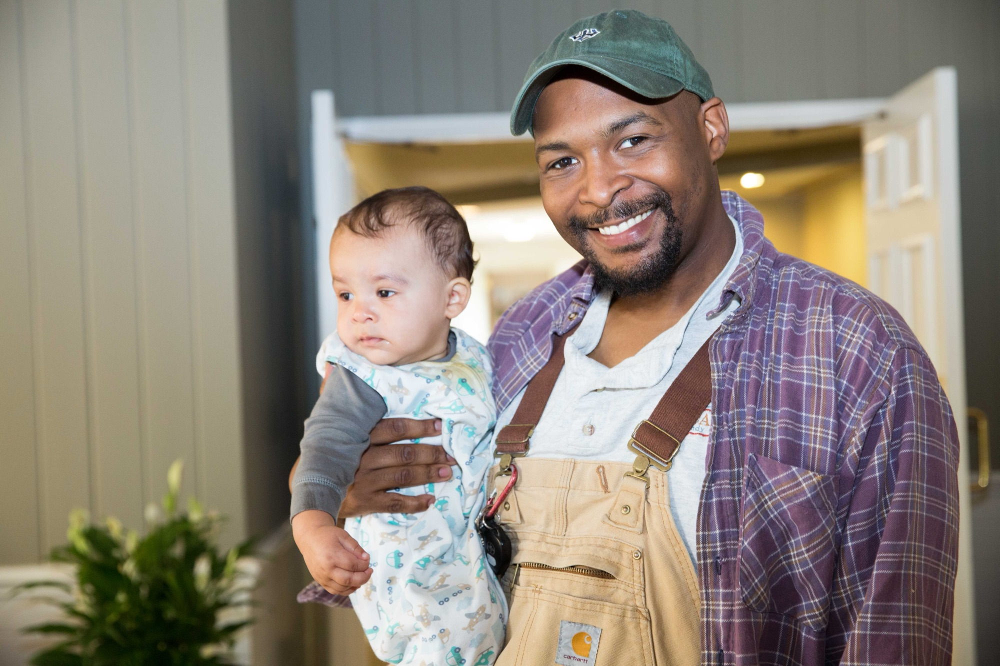
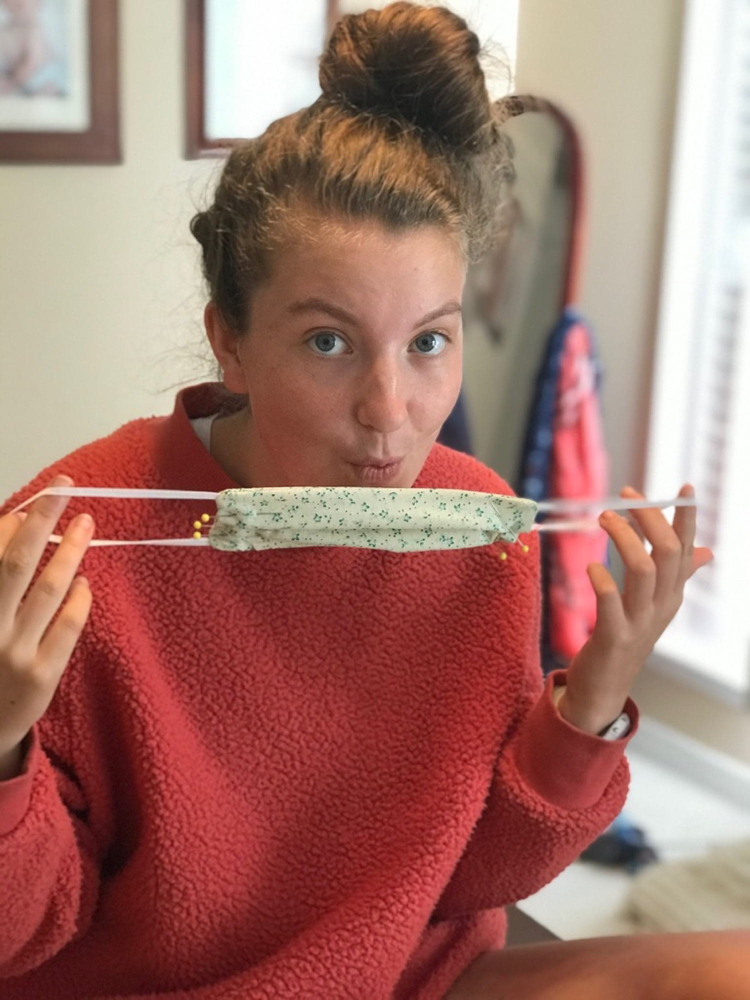
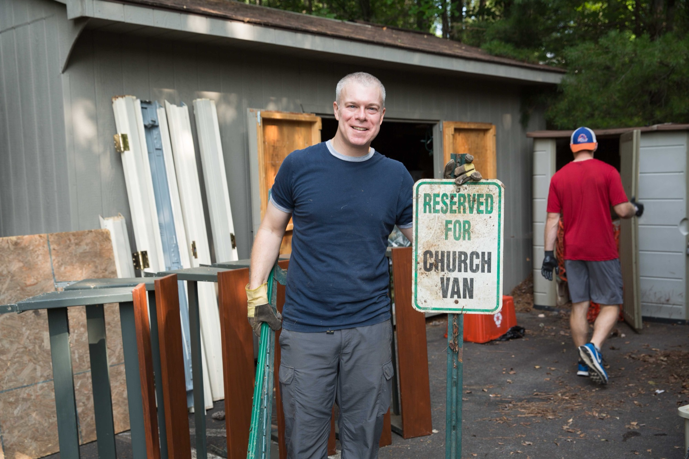
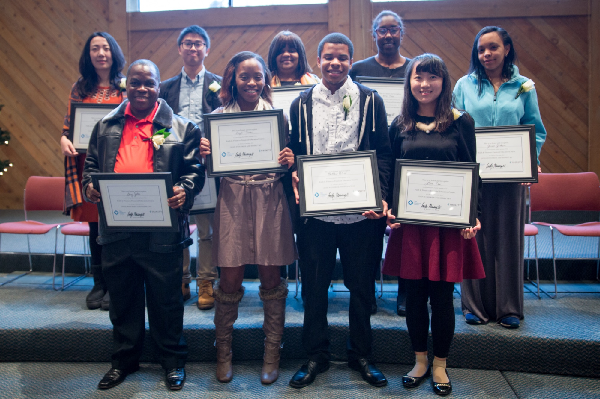
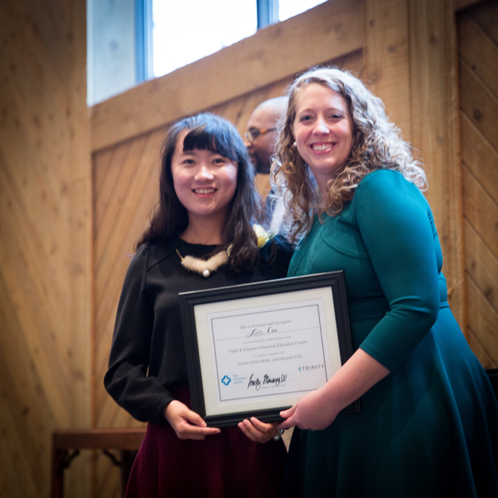

Proclaiming Christ to Charlottesville and UVA
Local Outreach
Rooted in Charlottesville, Trinity and Trinity members have been privileged to see the Lord’s impact locally through a variety of ministries and ministry partners. In 1996, under the leadership of Amy Sherman and John Hall, Trinity helped establish what is now known as Abundant Life Ministries. Other local ministry partners and places of significant member involvement include:
- the AL Christmas Shop
- the Jail Ministry
- Thanksgiving Meal deliveries and the International Thanksgiving Feast
- Love INC
- COVID-19 food and diaper deliveries
- the Mercy Closet
- ESL classes
- Jobs for Life outreach
- Faith and Finances
- Christianity Explored (early 2000s)
- the Alpha Course (during COVID)
-

-

-

-

-

-

-

International Outreach Without Leaving Town
Trinity has uniquely served as a spiritual home for students, faculty, and residents alike. Ministries like the Christian Study Center, RUF, AIA, and Young Life all have long-standing partnerships with Trinity, and Trinity members serve in leadership positions. With thousands of international students arriving in Charlottesville every year, the nations arrive on our doorstep. Ministries like ISI and a Chinese-language Bible study provide opportunities to reach the world without leaving town.
Upon returning to Trinity in 2012 after serving as one of its supported missionaries in China, I was delighted to find a rich and deep community of brothers and sisters involved in the Mandarin Bible study, then led by Wright and Dori Doyle. Over red bean rice snacks and the word of God, we would gather in the 10:00 Sunday school hour to learn about Christ and share our lives — some of us Westerners still fumbling through the language, but always graciously included! This group became a beautiful picture of the welcome of Christ as people of varied ages and callings, from longtime Trinity members to UVA international students or medical researchers from the East, gathered to grow in their faith or ask earnest questions about Christianity. Many came from atheistic home cultures and had never explored the Bible’s claims. The Chinese men and women God used to shepherd and increasingly lead this group were humble and servant-hearted brothers and sisters that helped our Trinity family reflect the global body of Christ more fully. We also had a lot of fun, too — enjoying events like Easter feasts and egg hunts and even a memorable night of Chinese New Year karaoke at the church with folks of all ages!